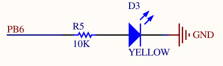
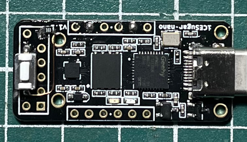
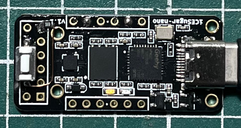

LED腳位

module main (
input btn,
output reg led
);
initial begin
led = 0;
end
always @(posedge btn) begin
led <= ~led;
end
endmodule
main.pcf
set_io led B6 set_io clk D1
Makefile
all: yosys -p "synth_ice40 -json main.json -blif main.blif" main.v nextpnr-ice40 --lp1k --package cm36 --json main.json --pcf main.pcf --asc main.asc --freq 48 icepack main.asc main.bin run: icesprog -w main.bin clean: rm -rf main.blif main.asc main.bin main.json
編譯、燒錄
$ make $ make run
完成

